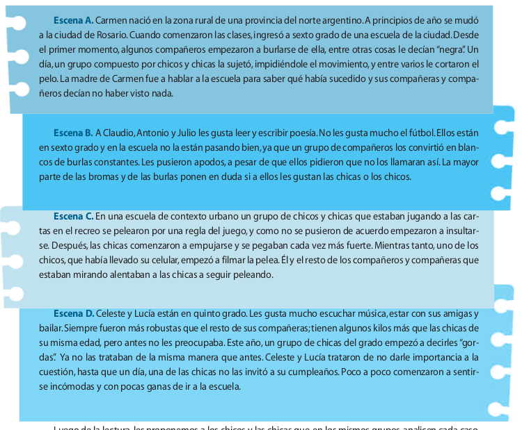
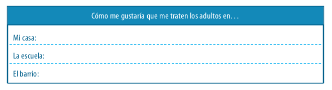
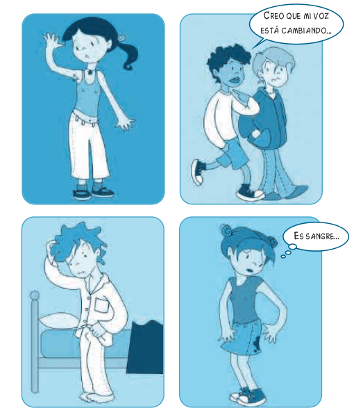
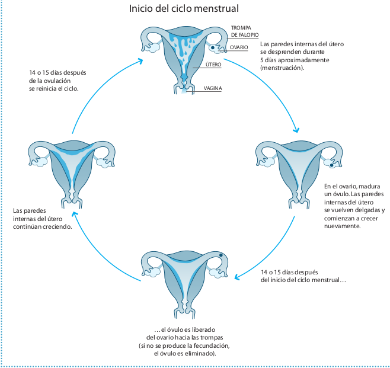

Created: 2017-12-19 mar 21:12
Proyecto enmarcado en el Educación sexual integral para la educación primaria dentro de la Ley Nacional 26.150 concepción es la sostenida por la Organización Mundial de la Salud:
“El término ‘sexualidad’ se refiere a una dimensión fundamental del hecho de ser humano. […] Se expresa en forma de pensamientos, fantasías, deseos, creencias, actitudes, valores, actividades, prácticas, roles y relaciones. La sexualidad es el resultado de la interacción de factores biológicos, psicológicos, socioeconómicos, culturales, éticos y religiosos o espirituales.[…] En resumen, la sexualidad se practica y se expresa en todo lo que somos, sentimos, pensamos y hacemos” .
Organizando a Los chicos y las chicas en pequeños grupos y les entregamos copias de las escenas, invitándolos a que las lean juntos. 
El objetivo de esta actividad es que las niñas y los niños puedan reconocer y utilizar herramientas de protección frente a posibles situaciones de maltrato y/o abuso procedente de adultos y/o adolescentes, en el contexto familiar o en otros contextos. 
Se habilitó un buzón de preguntas Anónimas.

